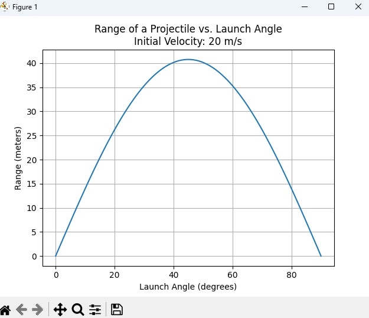

Problem 1
Investigating the Range as a Function of the Angle of Projection
1. Theoretical Foundation
To begin, we must derive the basic equations of motion for projectile motion, assuming no air resistance and constant gravitational acceleration.
Governing Equations of Motion:
Projectile motion is governed by the kinematic equations in both the horizontal and vertical directions. The motion occurs in two dimensions horizontal (x) and vertical (y) and is subject to constant acceleration due to gravity in the vertical direction. We assume:
-
The projectile is launched with an initial velocity \(v_0\) at an angle \(\theta\) relative to the horizontal.
-
The initial position of the projectile is at the origin: \((x_0, y_0) = (0, 0)\).
-
The acceleration due to gravity is \(g\) (which acts downward).
In this setup, the motion of the projectile can be described by the following equations:
- Horizontal Motion (constant velocity since no acceleration in the x-direction):
$$ x(t) = v_0 \cos(\theta) \cdot t $$
- Vertical Motion (accelerated motion due to gravity):
$$ y(t) = v_0 \sin(\theta) \cdot t - \frac{1}{2} g t^2 $$
Here:
-
\(v_0\) is the initial velocity,
-
\(\theta\) is the angle of projection,
-
\(g\) is the acceleration due to gravity, and
-
\(t\) is time.
Time of Flight:
The projectile will hit the ground when \(y(t) = 0\). Setting the vertical motion equation equal to zero and solving for \(t\), we get the time of flight:
This is a quadratic equation in \(t\), with solutions:
Range:
The range \(R\) of the projectile is the horizontal distance traveled when it hits the ground, i.e., when \(y(t) = 0\). Substituting the time of flight \(t = \frac{2 v_0 \sin(\theta)}{g}\) into the horizontal motion equation:
Simplifying:
Thus, the range \(R\) depends on the initial velocity \(v_0\), gravitational acceleration \(g\), and the launch angle \(\theta\).
2. Analysis of the Range
From the derived equation for the range:
We can analyze how the range depends on the angle of projection \(\theta\).
Angle Dependency:
-
The term \(\sin(2\theta)\) indicates that the range is a function of the angle of projection. The sine function reaches its maximum value of 1 when \(\theta = 45^\circ\). Therefore, the projectile achieves its maximum range when it is launched at an angle of 45 degrees.
-
For angles less than 45°, the sine of \(2\theta\) increases, but the range decreases as the angle approaches 0° (horizontal launch). Conversely, for angles greater than 45°, \(\sin(2\theta)\) decreases as the angle approaches 90° (vertical launch).
Influence of Initial Velocity:
- The range is directly proportional to the square of the initial velocity, \(v_0^2\). Therefore, increasing the initial velocity will result in a larger range, regardless of the angle.
Influence of Gravitational Acceleration:
- The range is inversely proportional to the gravitational acceleration \(g\). If \(g\) decreases (e.g., on a planet with lower gravity), the range will increase for the same initial velocity and launch angle.
3. Practical Applications
Uneven Terrain:
If the projectile is launched from a height \(h\) above the ground (e.g., a cliff), the range equation must be adjusted to account for this. The time of flight will be longer due to the higher launch position, and the equation for the vertical motion becomes:
This leads to a more complex solution for the time of flight and range, but the overall approach remains similar. A numerical solution can be used to handle this situation.
Air Resistance:
Realistically, air resistance cannot be ignored, and its effect on the projectile’s trajectory is significant at higher speeds. The equations of motion would need to incorporate drag forces, which are typically modeled as:
where:
-
\(C_d\) is the drag coefficient,
-
\(\rho\) is the air density,
-
\(A\) is the cross-sectional area of the projectile, and
-
\(v\) is the velocity of the projectile.
This makes the equations non-linear, requiring numerical methods to solve the trajectory and range.
4. Implementation
To simulate projectile motion and visualize the range as a function of the angle of projection for different initial conditions, we can create a computational tool. Below is a simple Python code to calculate and plot the range as a function of launch angle for a given initial velocity.
import numpy as np
import matplotlib.pyplot as plt
# Constants
g = 9.81 # gravitational acceleration in m/s^2
v0 = 20 # initial velocity in m/s
# Function to calculate the range
def range_of_projectile(v0, theta, g):
return (v0**2 * np.sin(2 * np.radians(theta))) / g
# Angles of projection (0 to 90 degrees)
angles = np.linspace(0, 90, 100)
# Calculate range for each angle
ranges = range_of_projectile(v0, angles, g)
# Plotting the range as a function of angle
plt.plot(angles, ranges)
plt.title(f"Range of a Projectile vs. Launch Angle\nInitial Velocity: {v0} m/s")
plt.xlabel("Launch Angle (degrees)")
plt.ylabel("Range (meters)")
plt.grid(True)
plt.show()

[https://i.pinimg.com/originals/32/a9/ab/32a9abd19a170984b88292be84cc5ff8.gif]
Output and Interpretation:
Running this code will generate a plot of the range as a function of launch angle for a given initial velocity. The curve will peak at 45 degrees, illustrating the theoretical result. This visualization provides insight into the optimal launch angle for maximum range.
Conclusion
By examining the range of a projectile as a function of the launch angle, we've seen how simple principles of physics can lead to rich and complex relationships. This analysis not only provides foundational understanding but also enables practical applications in diverse fields, from sports to engineering. Simulation tools like the one described can be further enhanced to incorporate more real-world complexities, such as air resistance and varying terrain.